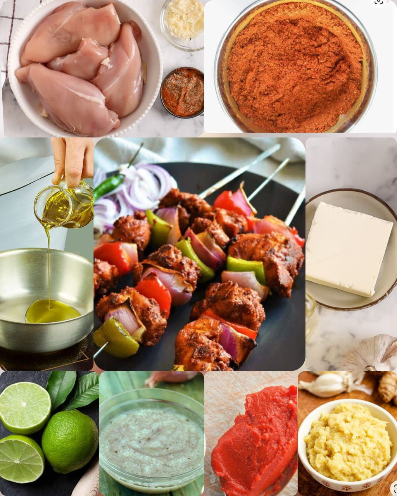

Chicken Tikka
Home
Chicken Tikka is a chicken dish originating in the Indian subcontinent during Mughal era. The dish is popular in India, Bangladesh and Pakistan. It is traditionally small pieces of boneless chicken baked using skewers on a brazier called angeethi or over charcoal after marinating in Indian spices and dahi essentially a bpneless version of Tandoori Chicken. The word tikka is a persian word, meaning "bits" or "pieces". It is also a chicken dish served in Punjabi cuisine.
Ingredients
Boneless Chicken - 500 gms
(cut into 2” tikka pieces)
1st Marinade:
Salt- 1 tsp
Lemon Juice-2 tsp
Ginger Garlic Paste- 1 tbsp
2nd Marinade:
Hung Curd- 5 tbsp
Turmeric Powder- a pinch (1/8 tsp)
Kashmiri Chilli Powder- 5 tsp
Cumin Powder- 1/2 tsp
Garam Masala Powder- 1/2 tsp
Mace Powder(Javitri Powder)- 1/2 tsp
Kasuri Methi(Fenugreek Leaves),
dry roasted & powdered- 1/2 tsp
Salt- a pinch (1/8 tsp)
Red Food colour- a pinch
Cooking Oil- 2.5 tbsp
Butter, for basting(melted) - 2-3 tbsp

Nutrition Facts
Calories 291
Total Fat 12g(18%)
Cholesterol 82mg(27%)
Sodium 268mg(11%)
Total Carbohydrate 11g(4%)
VitaminC 66%
VitaminA 23%
Procedure
To prepare the hung curd, strain the water from the curd or plain yogurt using a strainer or cloth to have a thick curd without any water. This may take 1.5 to 2 hrs, so plan accordingly.
You can use chicken tikka pieces or alternatively cut boneless chicken fillets into tikkas.
Now add the garlic, ginger, cloves, green cardamom and the cinnamon sticks and mix well.
Wash and pat dry the boneless chicken fillets. Cut into 2” tikka shapes.
For the 1st marinade, add all the ingredients, mix well and set aside for 30 mins.
To prepare the 2nd marinade, add all the ingredients specified above in a bowl.
Whisk everything together and then add the marinated chicken pieces without the water that has released from the chicken . Mix everything well so that the chicken tikka pieces are well coated with the marinade.
Set aside to marinate for 3-4 hours in the refrigerator. Take out the marinated chicken from the refrigerator after 3 hrs & keep it in room temperature for 1 more hour before skewering & placing in the oven.
Skewer the marinated chicken tikkas on a metal skewer 4 at a time.
Lay the skewers on a foil lined baking tray.
Preheat the oven/OTG to 250 degrees C.
Slide in the tray in the top slot of the oven.
Roast for 10 mins at 250 degrees C. After 10 mins turn the chicken tikkas.
Roast for another 10 mins at 250 degrees C on the other side.
Remove and baste with melted butter.
Reduce the oven temperature to 200 degrees C.
Roast for 7-8 mins at 200 degrees C. Flip the chicken and continue basting with melted butter.
Finally roast for another 6-7 mins at 200 degrees. Remove the tray once the edges of the chicken are lightly charred.
Serve as an appetizer.
Expert Guide
Back ←
Scroll to Top ↑